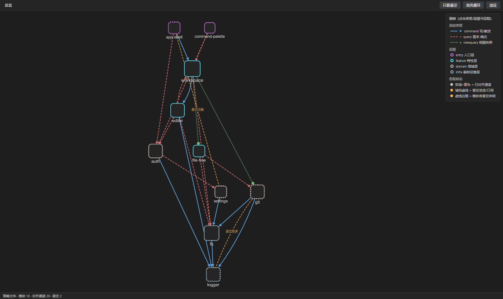
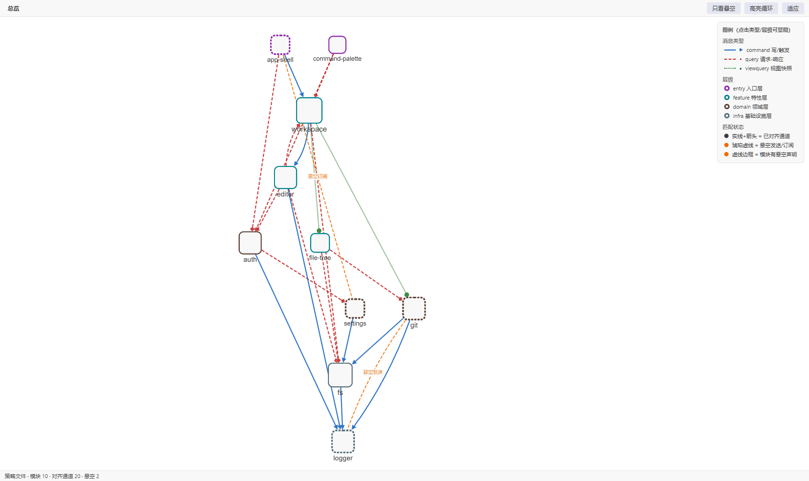
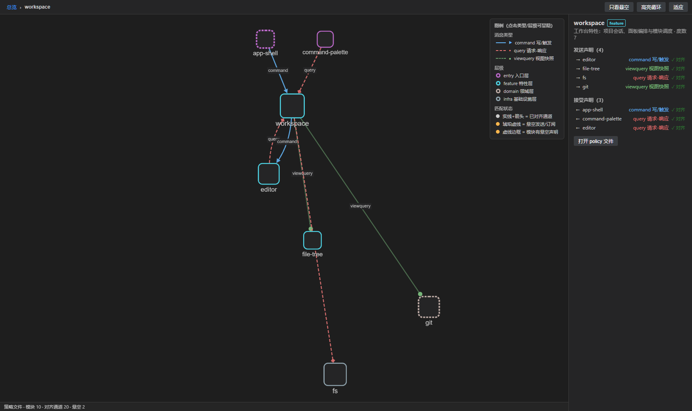
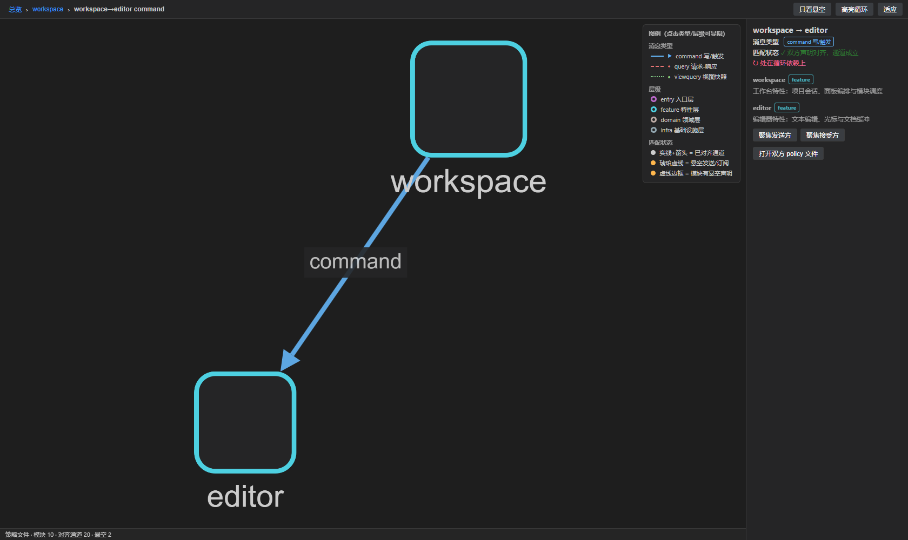
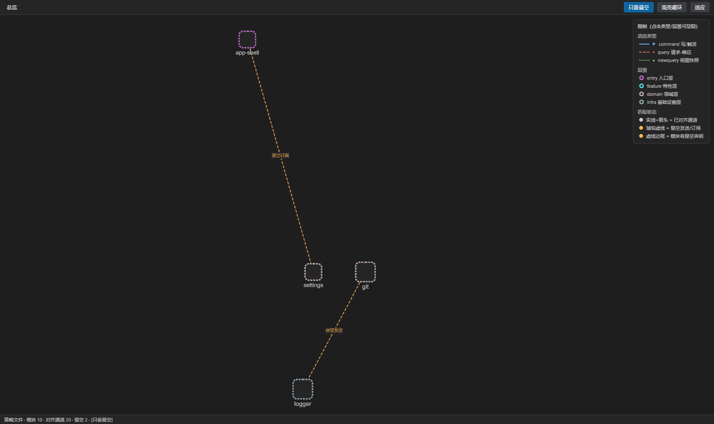
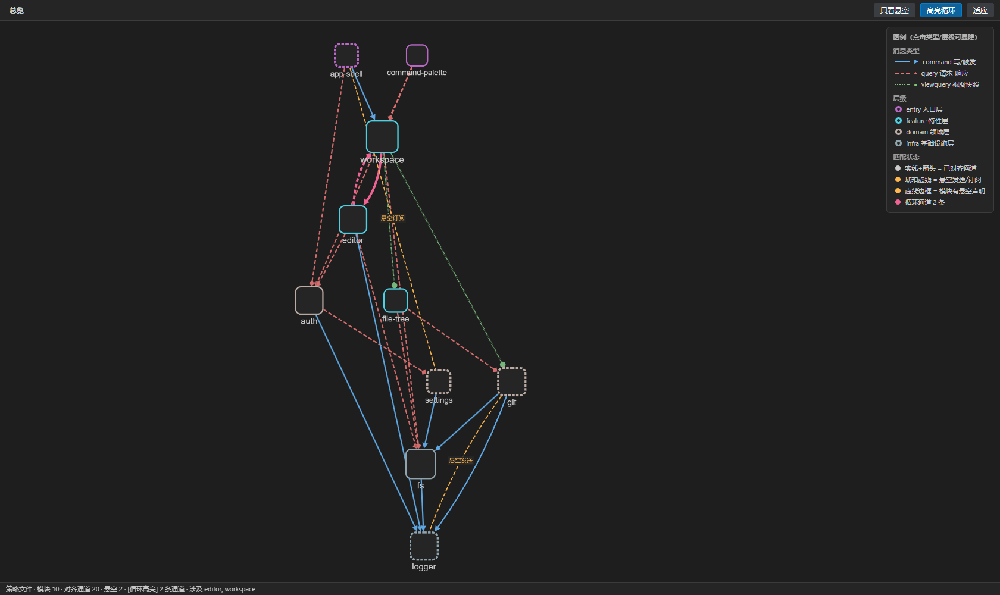
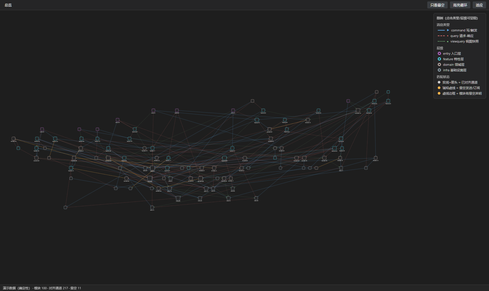

以下 7 张全部是最终交付的 dist/webview.js 真实运行截图（无头 Edge 实拍，注入真实 policy 数据与 VS Code 深色主题变量），不是示意图或重建。你点击任意图片块写意见即可；意见请落到图上具体位置（如"左下图例第 3 行""右上角落节点标签"）。
说明：截图无法承载动效（悬停高亮、缩放骨架化、拖拽、Esc 返回），这些请 F5 实测。
dagre 自上而下分层（entry→infra），箭头=消息流方向；三种消息类型=颜色×线型×箭头形状；琥珀虚线为两条悬空声明；节点大小/字号=耦合度（workspace 最大）。

与上一张同一数据，切换 VS Code 浅色主题后的画布（canvas 颜色热替换）。

子图隔离后宽松重排，画面只剩该模块相关关系；右侧 policy 详情面板（发送/接受清单 + ✓/✗ 对齐状态，行可点下钻）；面包屑「总览›workspace」。

画面只剩 workspace→editor 一条 command 通道；边文字显示消息类型；右侧通道详情（类型/匹配状态/循环标记）。

工具栏「只看悬空」开启：只剩悬空发送（git→logger query）与悬空订阅（app-shell→settings command）及端点模块；信息栏出现 [只看悬空] 标记。

「高亮循环」开启：workspace↔editor 两条循环通道洋红色强调；信息栏列出涉及模块。

固定种子生成的演示数据全图：217 对齐通道（35% 透明度骨架化）+ 11 悬空；infra-01 / infra-02 为耦合枢纽（度数 10/11，节点最大）。静态截图为整图等比缩放，真实页面中可缩放浏览。
